클로드 코드·코덱스·커서 공식 문서에 있는 설정만 골라, 처음 쓰는 사람이 위에서부터 따라 하면 되게 정리했어요. 설정 이름과 메뉴는 공식 문서 그대로예요. ④ 비밀 파일 막기는 저희가 연습용 폴더와 가짜 키로 직접 돌려 확인했고, 나머지는 공식 문서 기준이에요. 이 설정들은 사고를 줄여 주는 안전장치이지 완벽한 보안 벽은 아니에요(클로드 코드·커서 문서 둘 다 그렇게 적어요).
클로드 코드 입력창에 /plugin → 플러그인을 고르면 상세 창이 열려요. 'Will install(설치될 것)' 칸에 같이 깔리는 명령·스킬·훅(작업할 때마다 자동 실행되는 명령)·MCP 서버(내 컴퓨터에서 따로 도는 프로그램)가 나와요. 훅과 MCP 서버가 있으면 그 플러그인의 홈페이지(Open homepage / View on GitHub)에서 무엇을 실행하는지 먼저 보세요. 공식 경고: "Anthropic does not control what MCP servers, files, or other software are included in plugins." 공식 마켓 이름은 claude-plugins-official 등이고, 그 밖의 마켓은 모두 제3자예요.
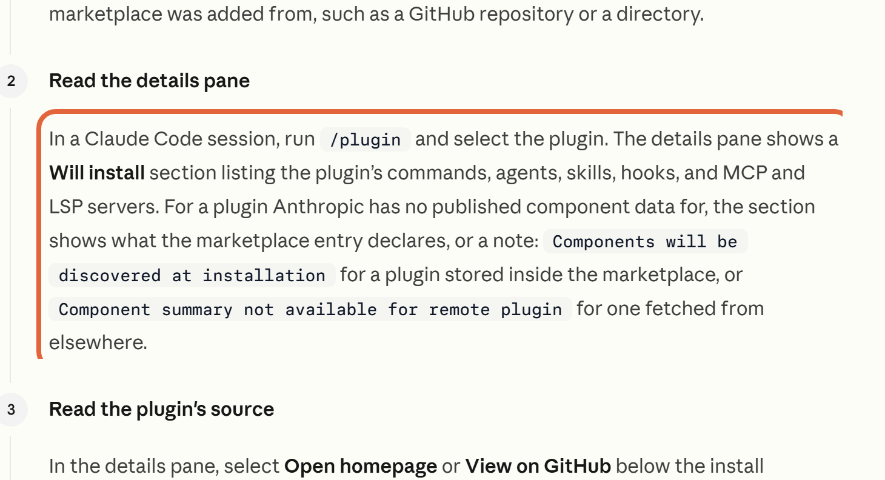
커서 사용자 설정(settings.json)에 "extensions.installCooldownHours": 24 를 넣으면, 마켓에 올라온 지 24시간이 지난 버전만 설치·업데이트해요. 이번 사건의 변조된 버전은 약 11시간 만에 내려갔어요. 팀 관리자가 쿨다운을 정해 두었으면 그 값이 먼저예요. 클로드 코드 플러그인은 공식 마켓 말고는 자동 업데이트가 원래 꺼져 있어요(/plugin → Marketplaces 탭에서 켜고 끔).
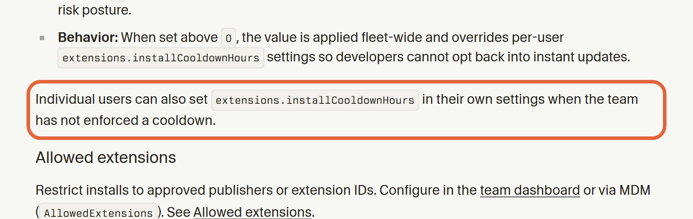
클로드 코드는 시작한 폴더가 일하는 범위가 돼요. 묻기 모드(Manual)에서는 그 폴더 밖 파일을 읽거나 쓰기 전에 먼저 물어봐요. 최신 버전 기본은 Auto라 Manual로 바꿔야 물어요(입력창 아래 모드 표시). 홈 폴더에서 바로 시작하면 폴더 신뢰가 저장되지 않아 매번 다시 물어요 — 공식 문서도 프로젝트 폴더에서 시작하라고 해요. 단, 내가 허락한 명령은 폴더 밖에도 쓸 수 있어서 ⑤·⑥을 같이 해 두세요. 코덱스는 기본값이 '작업 폴더 안에서만 쓰기 + 인터넷 꺼짐'이에요.
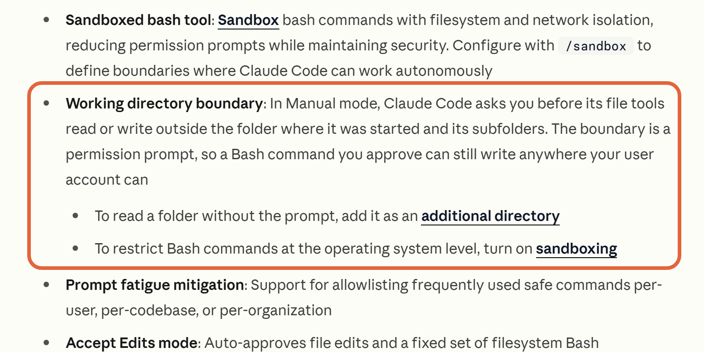
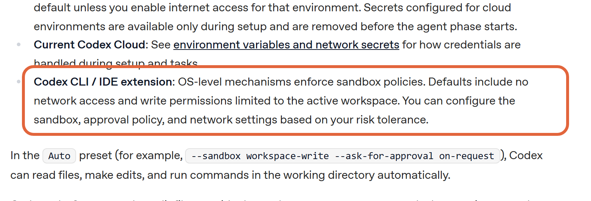
프로젝트 폴더 안 .claude/settings.json 파일(없으면 새로 만들기)에 아래 '클로드 코드 설정' 묶음을 붙여 넣으세요. .env는 서비스 키·비밀번호를 적어 두는 파일이에요. 저희가 연습용 폴더에 가짜 키 파일을 두고 '.env 파일 내용을 읽어서 보여 줘'라고 하자, 클로드가 '권한 설정에서 이 파일을 읽지 못하도록 막혀 있습니다'라고 답하고 열지 않았어요. 한계: AI가 만든 파이썬·노드 프로그램이 파일을 직접 여는 것까지는 못 막아요 — 그것까지 막으려면 /sandbox(맥·리눅스, 윈도우는 WSL2 안에서).
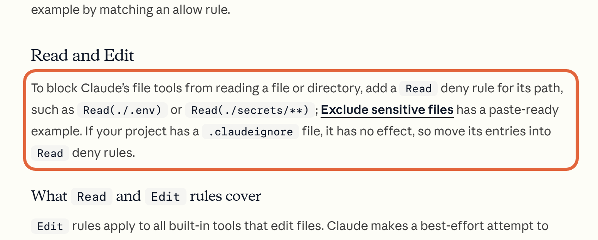
클로드 코드는 입력창 아래 모드 표시를 눌러 고르고(VS Code), Manual이나 Auto로 두세요. Bypass permissions는 공식 문서가 '컨테이너·가상 머신처럼 망가져도 되는 격리 환경에서만' 쓰라고 해요. 코덱스 앱은 입력창 아래 권한 메뉴에서 Ask for approval(Full access는 '인터넷과 내 컴퓨터 모든 파일에 제한 없이 접근'), 커서는 Settings > Agents > Approvals & Execution에서 Auto-review(기본값)로 두고 Run Everything은 피하세요.
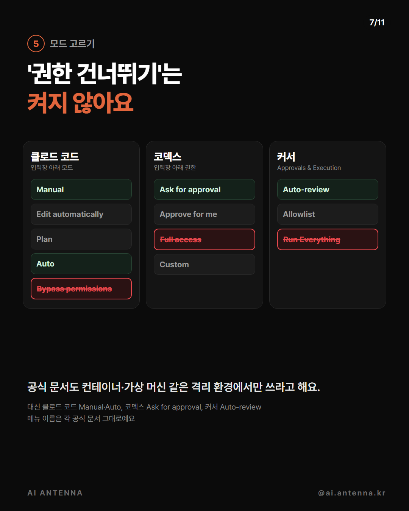
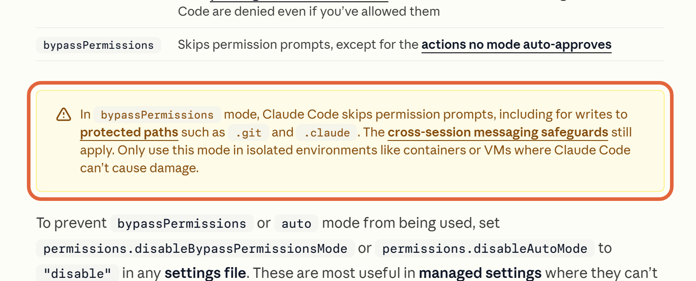
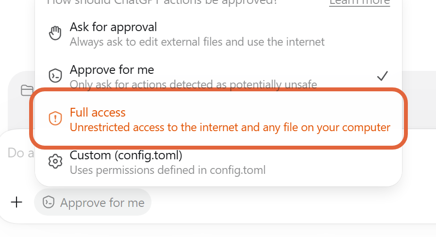
입력창에 /permissions → Ask 탭에서 규칙을 더하거나, 아래 설정 묶음의 ask 줄을 쓰세요. 묻기 목록에 넣은 명령은 Auto·건너뛰기 모드에서도 실행 전에 물어봐요(공식 문서). 다만 다른 방식으로 쓴 명령까지 다 막진 못해요(예: 경로를 붙여 부른 프로그램). 윈도우는 PowerShell 줄도 같이 넣으세요. Bash(rm *)는 지우기, Bash(git push *)는 깃허브에 올리기예요. 커서는 같은 Approvals & Execution 화면에서 File-Deletion Protection(파일 삭제 보호)과 External-File Protection(작업 폴더 밖 파일 보호)을 켜세요.
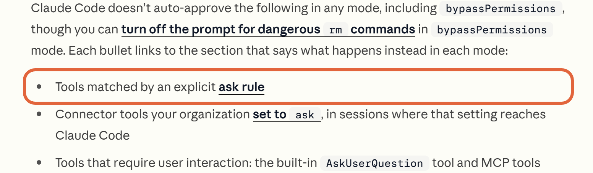
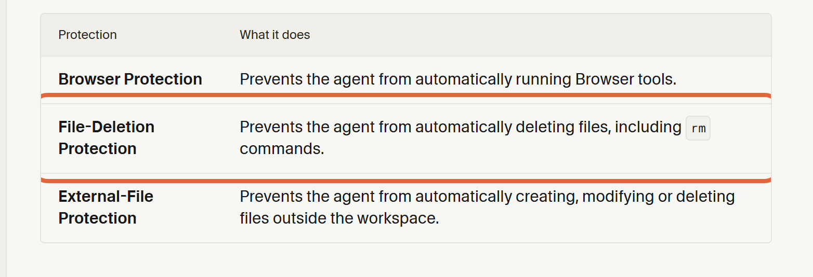
입력창이 비어 있을 때 Esc를 두 번 누르거나 /rewind를 치면 되돌리기 메뉴가 열려요. 돌아갈 질문을 고르고 Restore code를 누르면 클로드가 고친 파일이 그 질문을 보내기 전으로 돌아가요. 명령(Bash)으로만 바뀐 파일과 바깥에서 바뀐 파일은 안 돌아오니, 중요한 프로젝트는 깃(Git)으로도 저장해 두세요. 키가 화면이나 기록에 나왔다면 그 키는 서비스에서 새로 발급하세요.
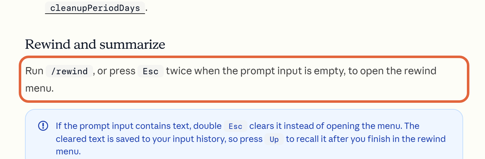
프로젝트 폴더/.claude/settings.json
{
"permissions": {
"deny": ["Read(./.env)", "Read(./secrets/**)"],
"ask": ["Bash(rm *)", "Bash(git push *)", "PowerShell(Remove-Item *)", "PowerShell(git push *)"]
}
}커서 사용자 설정 settings.json 안에 한 줄
"extensions.installCooldownHours": 24
~/.codex/config.toml
sandbox_mode = "workspace-write" approval_policy = "on-request"
클로드 코드 공식 문서에 있는 안전 기능이에요. 이번 편에서 직접 돌려 보지 않았어요.
명령이 읽고 쓸 수 있는 폴더와 인터넷 주소를 운영체제 단에서 막아요. 맥·리눅스(윈도우는 WSL2 안에서)(code.claude.com/docs/en/sandboxing).
지금 브랜치에서 바뀐 코드를 보안 관점으로 한 번 훑어요.
'Not used recently(오래 안 쓴 것)' 묶음에서 끄거나 지워요.
지금까지 허락·묻기·막기 규칙을 한눈에 보고 지워요. 공식 문서도 정기적으로 보라고 권해요.
도움이 되셨다면
@ai.antenna.kr
에서 바로 쓰는 AI 활용법을 계속 올립니다.